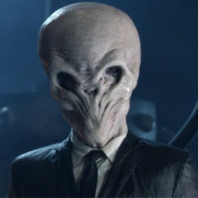

| Home | The Doctors | The Companions | The Villains |
|
|||
|
The Silence The Silence are a fictional religious order in the British science fiction television programme Doctor Who, represented by humanoids with alien-like physical characteristics. Executive producer Steven Moffat created the Silence, intending them to be "scarier" than past villains in Doctor Who. Though the phrase "Silence will fall" recurred throughout the 2010 series of Doctor Who, the Silence were not seen until the 2011 series' opener "The Impossible Astronaut". Their origins are eventually revealed in the 2013 special "The Time of the Doctor". In creating the Silence shown in "The Impossible Astronaut", Moffat drew inspiration from Edvard Munch's 1893 expressionist painting The Scream as well as the Men in Black. The Silence continues Moffat's trend of using simple psychological concepts to make his monsters more frightening. In this case of the Silence, their existence is a secret because anyone who sees them immediately forgets about them after looking away, but retains suggestions made to them by the Silence. This allows them to have a pervasive influence across human history while being difficult to locate or resist. |